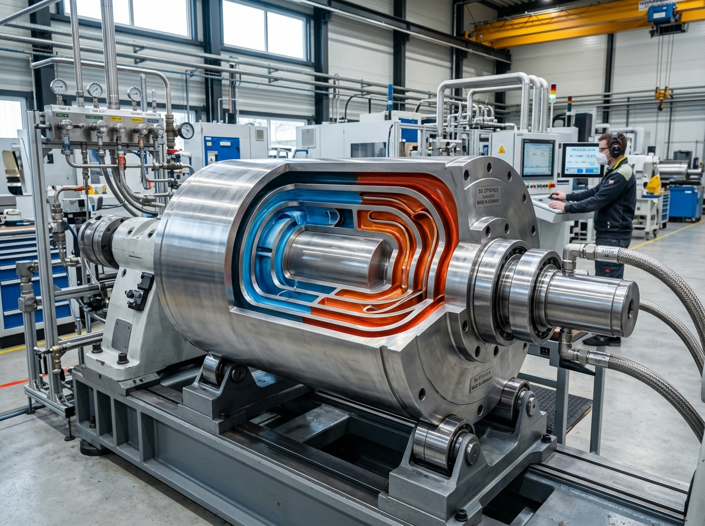
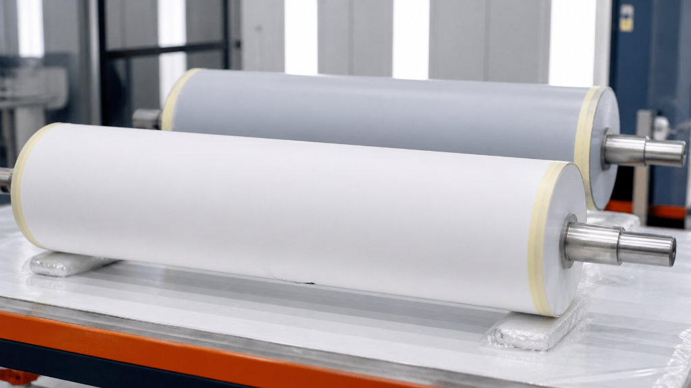
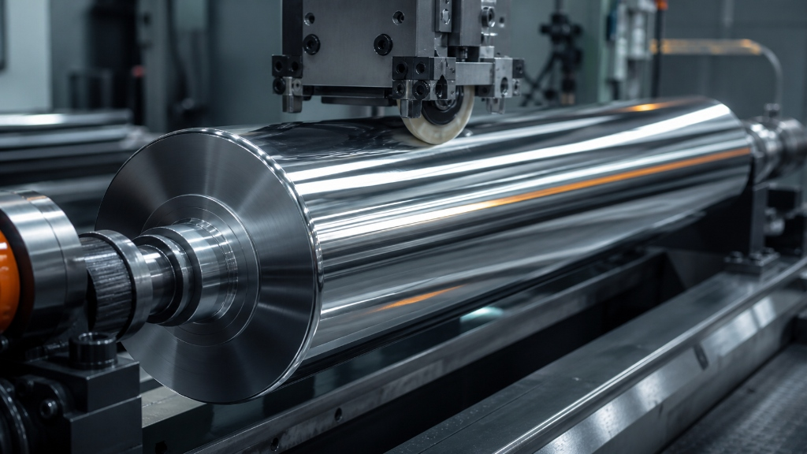
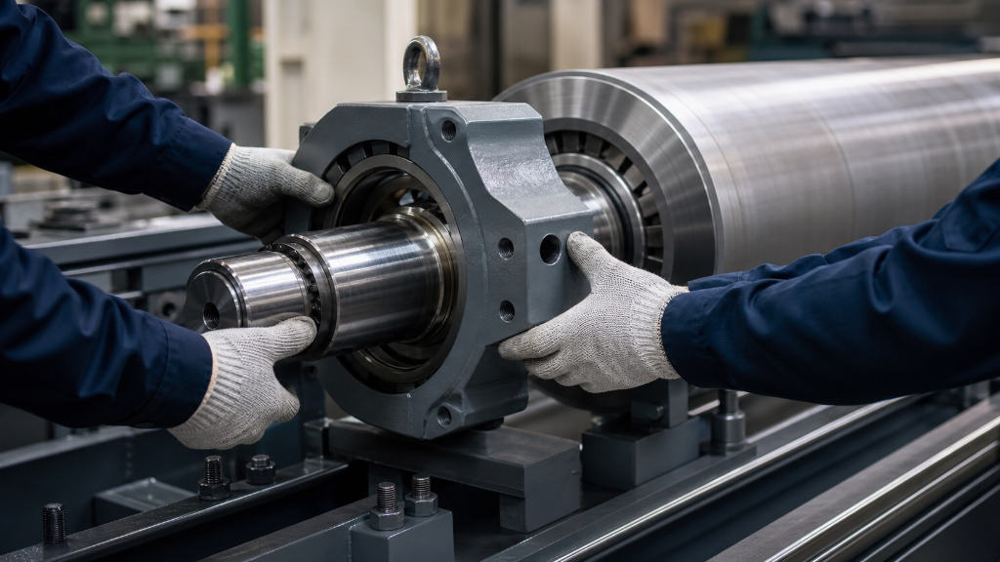
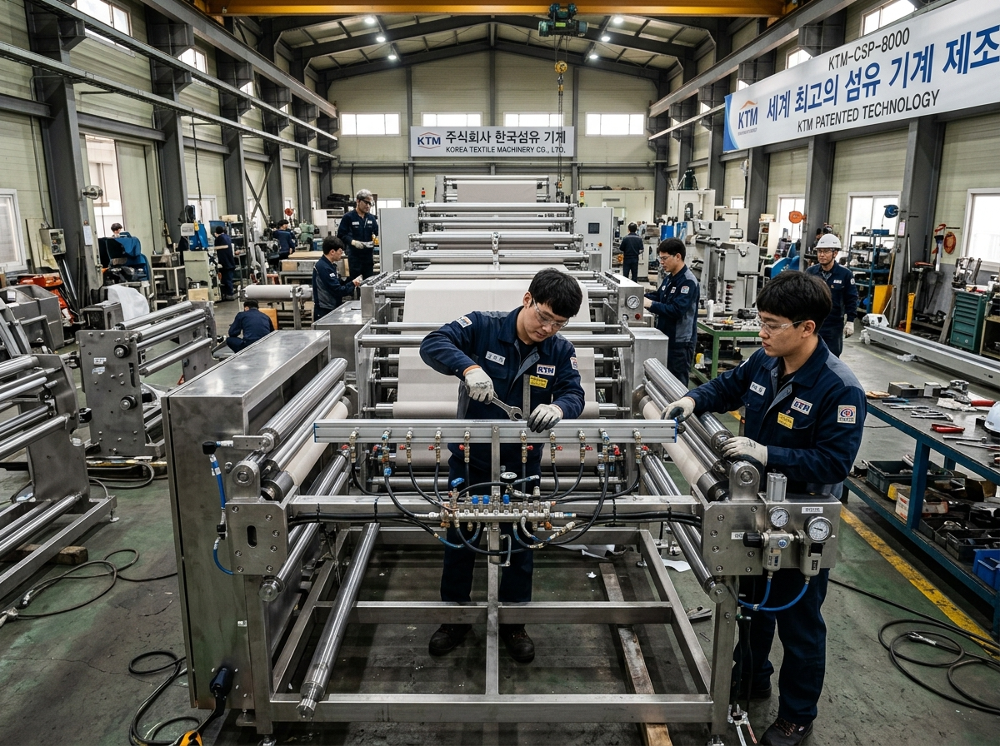
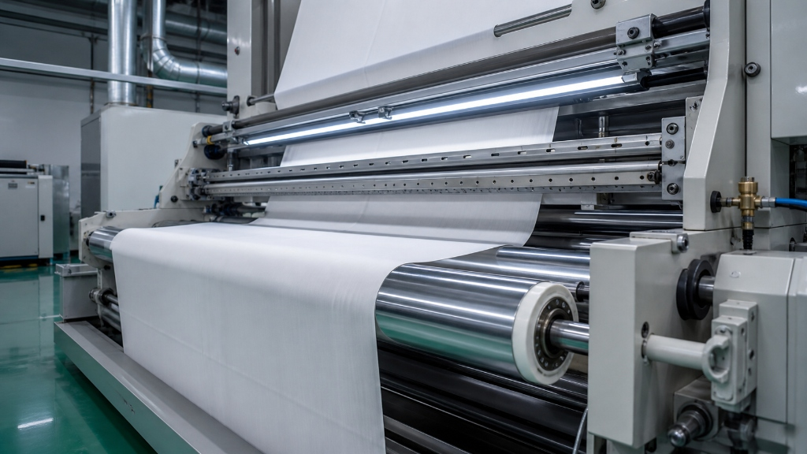
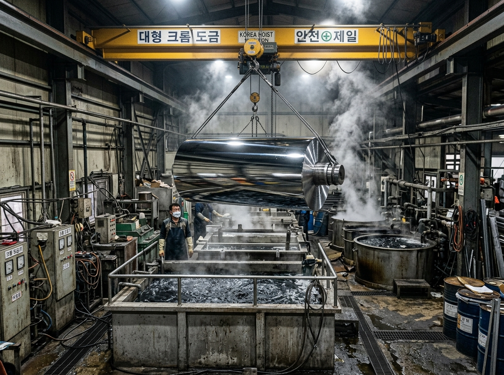
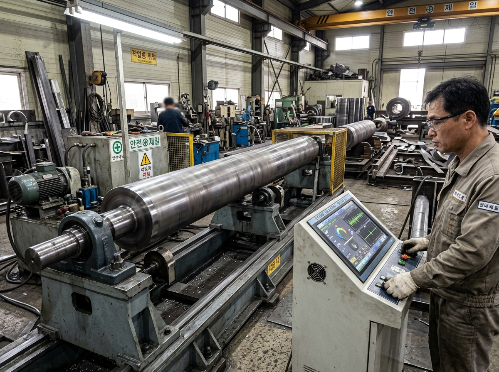

PRECISION CARE
QUARTERLY
정기 연마 케어
분기·반기별 수거 연마, 동적 밸런싱, 표면 상태 리포트를 묶어 계획정비로 전환합니다.
맞춤
공정별 견적
- 정기 표면 연마·밸런싱
- 수거·납품 일정 우선 배정
- 작업 전후 품질 리포트
냉각·히팅·엠보싱 특수 롤 제작부터 고무·우레탄 피복, 경질 크롬 도금, 테프론 코팅까지 — 30년 축적된 초정밀 가공 기술로 산업의 회전축을 완성합니다.
Certified Quality Standards & Patents
설비 다운타임을 최소화하고 공정 효율을 극대화하는 맞춤형 롤 솔루션을 제공합니다.
초정밀 가공부터 후속 공정까지 이어진 뒤, SJ 로고 엔드카드로 마무리됩니다.
정기 연마·밸런싱부터 마모 수명 예측, 특허 장비 SLA까지 한 화면에서 관리하는 유지보수 서비스형 비즈니스 모델입니다.
분기·반기별 수거 연마, 동적 밸런싱, 표면 상태 리포트를 묶어 계획정비로 전환합니다.
가동 시간·온도·압력 데이터를 바탕으로 재코팅 시점을 예측하고 알림톡·이메일 일정을 준비합니다.
특허 나염기·전용 산업기계 구매 기업을 위한 긴급 출장 A/S 우선권과 소모품 할인 멤버십입니다.
선택한 플랜과 알림 채널을 이 기기에 저장해 실험해 보세요.
내열성·내마모성·이형성·내화학성 조건을 조합해 추천 표면처리 방향을 확인하는 기술 상담 전 단계입니다.
현재 선택 결과
반복 접촉과 표면 내구성이 중요한 생산라인에 적합한 기본 추천입니다.
냉각 재킷, 스팀·열매체 통로, 표면 처리층을 CSS 기반 인터랙티브 그래픽으로 살펴보는 기술 신뢰 모듈입니다.
롤 바디 내부의 순환 재킷이 폭 방향 온도 편차를 줄이고, 외경 표면은 균일한 냉각 성능을 유지합니다.
선반 가공부터 출하까지, 고객 포털에서 단계별 진행률과 예상 일정을 확인하는 흐름입니다.
동진필름 · Ø800 × 5500L 냉각롤
주문번호를 찾지 못했습니다. 데모 주문번호를 선택해 주세요.
스크래치·편마모·도금 박리·열편차 등 실제 제조 현장의 문제 유형을 선택해 기술 대응 방향을 살펴보세요.
도금층 박리와 미세 스크래치가 반복되던 필름 라인 롤을 재도금하고 Ra 0.02 수준으로 복원했습니다.
사례 상담 연결라인 폭 방향의 경도 편차를 측정한 후 우레탄 재피복과 외경 연마를 진행해 접촉 압력을 균일화했습니다.
사례 상담 연결단순 가공을 넘어, 완제품의 내구성과 구동 밸런스를 끝까지 책임지는 제조 파트너입니다.
사용 환경(작업 온도, 압력, 마찰 계수)을 분석하여 최적의 소재(스틸, 스테인리스, 특수합금)와 구조를 제안합니다.
원자재 선삭부터 외경 연마, 크롬 도금, 우레탄 피복, 동적 밸런싱까지 외주 없이 공장 내에서 원스톱으로 처리합니다.
0.001mm 단위 공차 측정 장비와 고속 회전 바란스 시험을 거쳐 완벽하게 검증된 제품만을 고객사에 출고합니다.
산업 현장의 모든 회전 롤 및 기계 부품에 최적화된 제조 공정을 제공합니다.
정밀 자켓형 냉각롤, 스팀 및 오일 순환 히팅롤, 미세 패턴 엠보싱롤 및 조각롤을 도면 기준으로 정밀 가공합니다.


내마모성, 내약품성 우레탄 및 특수 고무 라이닝 피복 후 고정밀 외경 연마 마감.

경도 HV800 이상 크롬 도금과 Ra 0.02 이하의 초정밀 슈퍼피니싱 무광/경면 마감.

비점착성(Non-stick) 및 고온 내구성을 위한 RTV 실리콘 및 테프론 특수 표면처리.

특허 제 0389579호 보유. 롤 구동 산업기계 및 고정밀 분사식 나염기 제작·수리.
도면 접수부터 현장 납품까지 빈틈없는 품질 관리 파이프라인으로 납기를 준수합니다.
고객사의 가공 도면, 운전 속도(RPM), 사용 온도 및 압력을 검토하여 최적의 소재와 가공 방식을 도출합니다.
정밀 선삭, 열처리, 연마, 도금 등 단계별 일정과 허용 공차 기준을 확정합니다.
보유 중인 8M 대형선반 및 정밀 선삭 설비를 활용하여 롤 코어와 저널부를 1차 정밀 가공합니다.
용도에 맞게 고무/우레탄 라이닝, 경질 크롬 도금 또는 테프론 코팅 후 미크론 단위 초정밀 표면 마감을 진행합니다.
고속 회전 동적 바란스 시험기를 통해 진동을 제로화하고 외경 진원도 및 조도를 전수 검사합니다.
안전 포장 후 지정 장소로 출고하며, 장기 사용 후 표면 재연마 및 재생 서비스까지 원스톱 지원합니다.
대형 제지, 필름, 2차전지, 섬유 및 인쇄 라인에 공급된 승지정밀산업롤의 성과입니다.

0.001mm 미크론 공차 & 동적 바란싱 완료
기존 수입 롤의 런아웃 오차를 0.002mm 이내로 완벽히 국산화 대체하여, 라인 가동 속도를 35% 향상시키고 결함률을 획기적으로 낮췄습니다.
대형 선반부터 원통 연마기, 크롬 도금조, 동적 바란스기까지 핵심 설비를 자체 보유하고 있습니다.
최대 직경 Ø1200mm, 길이 8000mm까지 초대형 샤프트 및 롤 정밀 선삭 가공.
고무, 우레탄, 스틸 외경을 0.001mm 미크론 공차로 초정밀 원통 연삭.
고경도 전해 크롬 도금조 및 열풍 건조 라인으로 균일한 도금 두께 보증.

고속 회전 시 진동과 쏠림을 완벽 제거하는 Dynamic Balancing 전수 검증.

"기존 수입산 롤 대비 납기가 3주 이상 단축되었고, 0.002mm 수준의 정밀한 진원도로 라인 진동이 완전히 사라졌습니다."
"우레탄 피복 연마와 크롬 도금을 한 공장에서 원스톱으로 처리해주셔서 품질 균일도와 사후 관리가 정말 편해졌습니다."
"야간 긴급 롤 파손 시에도 즉시 대응해주셔서 공장 가동 중단을 막을 수 있었습니다. 기술력과 신뢰 모두 최고입니다."
도면 및 작업 환경 기준 맞춤 견적을 당일 신속하게 안내해 드립니다.
원자재 발주부터 선삭, 연마, 도금, 바란싱까지 도면 사양 기준 100% 맞춤 일괄 가공.
기존 코어 재활용을 통한 원가 절감. 우레탄 재피복, 크롬 재도금 및 정밀 재연마.
사양을 선택하시면 예상 공정 및 리드타임이 즉시 산출됩니다.